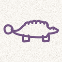

DinoDash — Privacy Policy
DinoDash is a simple endless-runner game. It has no account, no ads and no analytics, and it does not track you.
What DinoDash stores
Your top-3 leaderboard (scores and the names you type in), your selected dino, and your sound and Night Mode preferences. This is stored only on your iPhone. It is never sent to the developer or anyone else.
What leaves your device
Nothing. DinoDash does not connect to the internet.
What DinoDash does not do
It does not collect personal information, use advertising or analytics services, share data with third parties, or track you across other apps and websites.
Deleting your data
Delete the app to remove everything it stores.
Children
DinoDash does not collect any information from anyone, including children. Names typed into the leaderboard stay on the device.
Changes
If this policy changes, the new version will be posted at this address with an updated date.
Contact
Questions? Open an issue on GitHub or message me on LinkedIn.